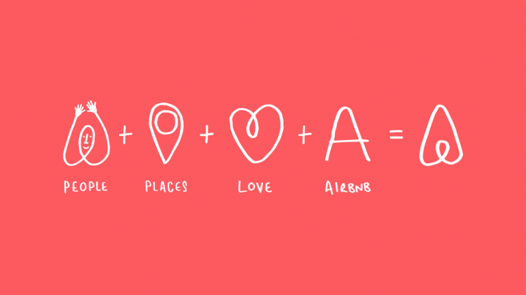

Brand Story Hero-Airbnb
As part of our Brand Story Hero series, we shine a spotlight on storytelling around a brand we admire. Today we’re looking at international online accommodation platform, Airbnb.
Brand: Airbnb
Industry: Lodging
Product: Online accommodation and experience platform
Founders: Brian Chesky
Year founded: 2008
Mission: To provide travellers with authentic experiences and to foster a sense of belonging anywhere in a community of like-minded individuals.
Airbnb started with a couple of broke students and an air mattress. When they were in college Brian Chesky, Joe Gebbia and Nathan Blecharczyk rented a mattress on their floor to strangers to help them pay the bills. From there Airbnb has gone onto be valued at $30 billion. That’s a pretty good story, to begin with, it’s the dream of every startup founder. However, after five years in business, Airbnb realised that this story didn’t really represent their brand anymore.
Finding Their Story
In late 2013 Airbnb’s co-founders–with the help of Douglas Atkin, their new community officer–decided to search for their story. Airbnb had previously marketed themselves as a service that provided homes for travellers rather than just accommodation. They created a series of videos centring around birdhouses entitle ‘Birdbnb’. This campaign didn’t fully convey the sense of community that had emerged from the platform. The people who were using Airbnb by this time were extremely passionate about it and vocal about that passion. Airbnb knew that that was where they would find their story, inside the community they had created. The team at Airbnb conducted interviews with close to 500 people all over the world who used the platform as hosts and as holidaymakers. There was one word that kept coming up during these conversations: belonging.
Hello Bélo
They wanted to create a symbol that could be easily replicated and that was instantly recognisable. They also wanted this new logo to become immediately synonymous with what the company stood for and what it meant to be part of the Airbnb community. This led to the creation of the ‘Bélo’ (pronounced bay low). This symbol was designed to represent the people, places and love present in the Airbnb community and the company itself. In 2014 Airbnb debuted their new mission statement to the world and launched the redesigned Airbnb site and app and of course the Bélo. They shared their vision for a world where anyone can belong anywhere and from there the new Airbnb story could begin.
Since the creation of the Bélo, Airbnb has continued to embrace the message of belonging. As a brand, they have championed messages of acceptance, equality and belonging. Their “Until We All Belong” video series in 2017 focused on the debate around marriage equality in Australia. Airbnb also offered free accommodation to people who were stranded on the back of President Trump’s executive order in January 2017. This was not a first for Airbnb. They previously encouraged hosts on the site to list their homes for free to victims of natural disasters.
